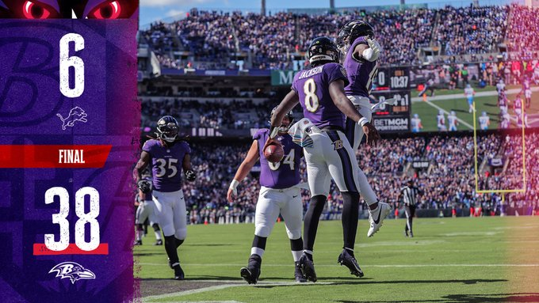

Firing on all cylinders!
The Ravens had a big day on offense with 5 total touchdowns and a field goal from kicker Justin Tucker. Mark Andrews caught two touchdowns while Neslon Agalhor caught one. Both Lamar Jackson and Gus Edwards ran for a touchdown and Justin Tucker kicked a fieldgoal late in the 4th quarter. Jackson finished going 21/27, throwing for 357 yards, 0 intercetptions and 36 rushing yards.
Scoring
- Mark Andrews - 2 Touchdowns
- Nelson Agholor - 1 Touchdown
- Lamar Jackson - 1 Touchdown
- Gus Edwards - 1 Touchdown
- Justin Tucker - 1 Fieldgoal 5 Extra Points

We're on to Arizona!
The Ravens improve their record to 5-2 while the Lions "fall" to 5-2. Baltimore looks to improve on this next week as they travel to Arizona to take on the Cardinals. The Cardinals will be without starter QB Kyler Murray as he continues to deal with injuries. The Cardinals have had a rough start this season and will be put to the test again against the Ravens. Kickoff is set at 4.25pm EST at Statefarm Stadium in Glendale, AZ.